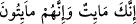
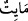
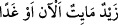
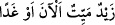
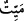
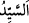
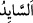
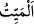
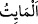
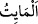
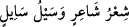
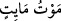
Bir kimsenin ölümüne sevinme.
Felek ondan sonra seni de çok tutmayacaktır.
Âyetin mânâsı, sen de öleceksin onlar da ölecekler, demektir. Bir nesne bir şeye
yaklaştığında onun ismiyle adlandırılabilir. Demek ki ölüm, ister yakın ister uzak olsun,
herkes için gerçekleşecek bir durumdur. Gelecek olan her şey de yakın demektir.
Rivâyet edildiğine göre Âdem (a.s.) yeryüzüne indirilince ona: “Fânî olacak
çocuklar dünyaya getir, harâb olacak binalar yap.” buyruldu.
Bazı kırâat âlimleri âyeti “__WORD__ şeklinde okumuştur. Çünkü ölüm ileride
vâki olacak bir şeydir. Bunun açıklaması şöyledir: “__WORD__ şimdi veya gelecekte meydana
gelen bir sıfattır. Bunun delili “__WORD__ demek doğru olurken, “__WORD__
demek doğru olmaz. Çünkü “__WORD__ ayrılmaz bir sıfatıdır (sıfat-ı lâzime). Tıpkı efendi ve
asil olarak doğmuş birine “__WORD__ denirken sonradan efendi olmuş birine “__WORD__
denilmesi gibi.
Denilmiştir ki ölüm, ruhun cesedden ayrılmasına işâret değildir. Aksine, insanoğluna
her halükârda ârız olan eksilme, noksanlaşma ve beşerin dünyada olduğu müddetçe
parça parça ölüyor olmasına işârettir. Bâzı âlimler de bu mânâyı ifâde ederek “__WORD__ ile
“__WORD__i birbirinden ayırmışlar, “__WORD__in kendisine devamlı noksanlık gelen kimse
demek olduğunu ifâde etmişlerdir.
Kadı Ali b. Abdülazîz de şöyle der: “Bizim dilimizde bu kimselerin söylediği gibi
bir “__WORD__ lafzı yoktur. Ancak “__WORD__ (şâirin şiiri, akanın akıntısı)” dendiği
gibi “__WORD__ (ölenin ölümü)” denir.”
İbn Mes’ûd (r.a.) der ki: “Rasûlullah (s.a.)’in ayrılık vakti yaklaşınca bizi Âişe
(r.anhâ) annemizin evinde topladı. Sonra bize baktı, gözleri yaşardı ve şöyle buyurdu:
Merhaba size! Allah size uzun ömür versin! Allah size merhamet eylesin! Size
Allah’tan korkup O’na itâat etmenizi tavsiye ederim. Artık ayrılık yaklaştı. Allah’a
sidretü’l-müntehâya, ve cennetü’l-me’vâya dönme vakti geldi. Beni ehl-i beytimin
erkekleri yıkasınlar. Dilerlerse şu giysilerimle, dilerlerse Yemen malı bir kumaşla
defnetsinler. Beni yıkayıp kefenlediğiniz zaman şu evimdeki sedirimin üzerine
lahdimin kenarına yatırın. Sonra bir süre yanımdan ayrılın. Çünkü benim için ilk
namaz kılacak olan sevgili dostum Cebrâil, sonra Mîkâîl, İsrâfîl, sonra da Ölüm
Meleği’dir. Onların hepsi ordularıyla birlikte gelirler. Sonra siz de bölük bölük
yanıma gelip namazımı kılarsınız.”
Oradakiler O’nun aralarından ayrılacağını duyunca, ağlayarak bağırıp çağırmaya
başladılar ve şöyle dediler: “Ey Allah’ın Rasûlü, Rabbimiz’in Rasûlü, bizi bir arada
tutan ışık, işimizin gücü kuvveti sensin! Sen yanımızdan ayrılıp gittiğinde işlerimizle
ilgili olarak kime mürâcaat ederiz?!”
Bunun üzerine Hz. Peygamber (s.a.) şöyle buyurdu: “Sizi gecesi gündüzü gibi aydınlık